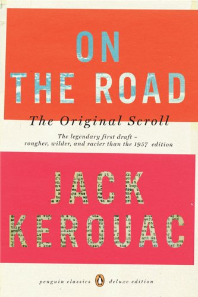

|  |
DescriçãoSal Paradise é o narrador de 'On the road - pé na estrada'. Ele vive com sua tia em Nova Jersey, Estados Unidos, enquanto tenta escrever um livro. Em Nova Iorque, conhece um andarilho de Denver de personalidade magnética chamado Dean Moriarty. Dean é cinco anos mais novo que Sal, mas compartilha o seu amor por literatura e jazz e a ânsia de correr o mundo. Tornam-se amigos e, juntos, atravessam os Estados Unidos, de New Jersey até a Costa Oeste, deparando-se com os mais variados tipos de pessoas, numa jornada que é tanto uma viagem pelo interior de um país pela Rota 66 quanto uma viagem de auto-conhecimento - de uma geração assim como dos personagens. Autor: Jack KerouacEditora: L&PM Edição: 1ª Edição Número de Páginas: 384 páginas Ano: 2004 |